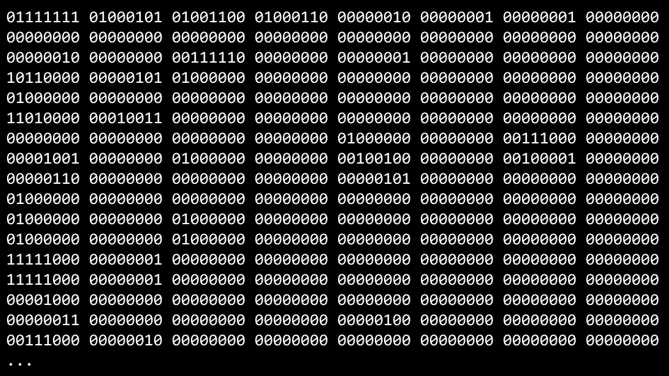
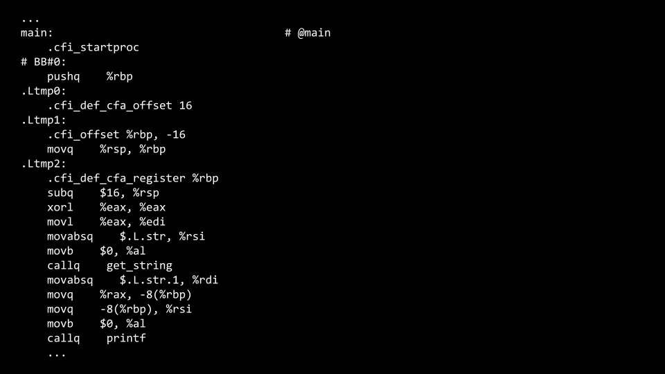
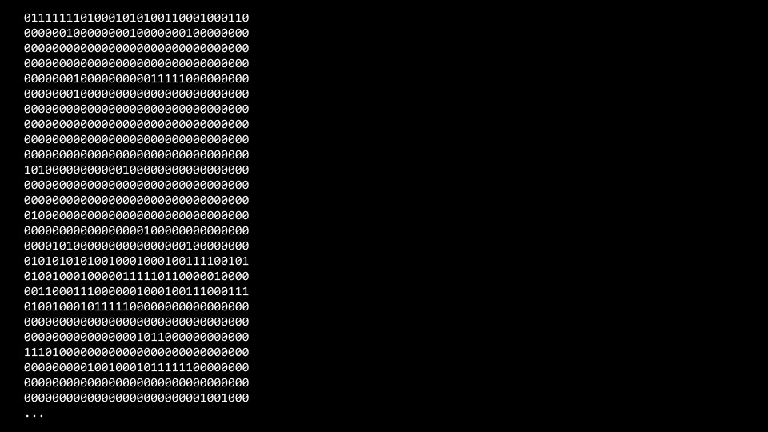
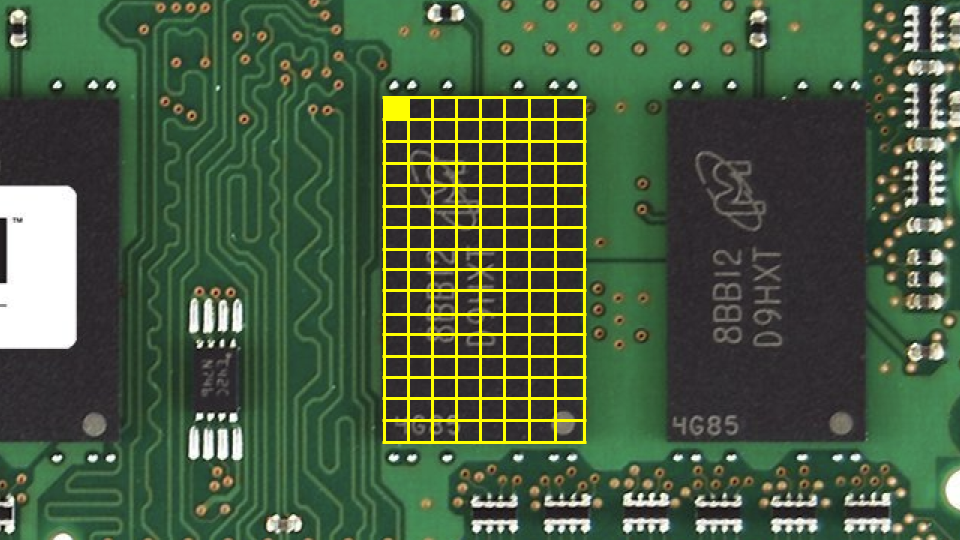
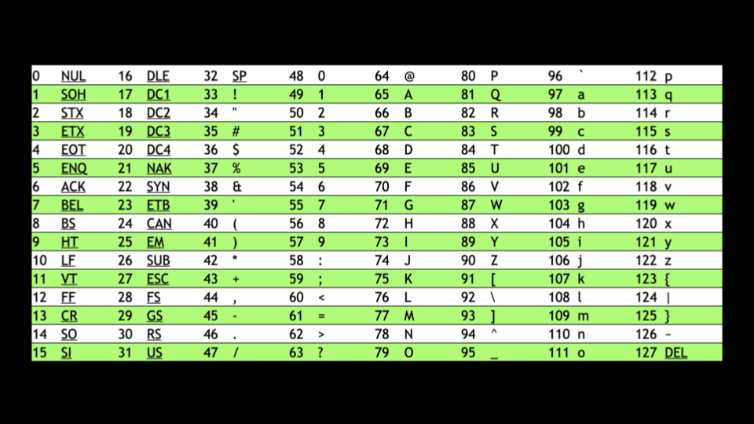
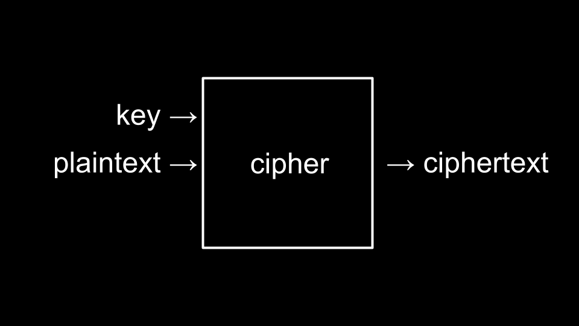

Lecture 2
- Welcome!
- Compiling
- Debugging
- Arrays
- Strings
- String Length
- Command-Line Arguments
- Exit Status
- Cryptography
- Summing Up
Welcome!
- In our previous session, we learned about C, a text-based programming language.
- This week, we are going to take a deeper look at additional building-blocks that will support our goals of learning more about programming from the bottom up.
- Fundamentally, in addition to the essentials of programming, this course is about problem-solving. Accordingly, we will also focus further on how to approach computer science problems.
Compiling
- Encryption is the act of hiding plain text from prying eyes. decrypting, then, is the act of taking an encrypted piece of text and returning it to a human-readable form.
-
An encrypted piece of text may look like the following:
- Recall that last week you learned about a compiler, a specialized computer program that converts source code into machine code that can be understood by a computer.
-
For example, you might have a computer program that looks like this:
#include <stdio.h> int main(void) { printf("hello, world\n"); } -
A compiler will take the above code and turn it into the following machine code:

- VS Code, the programming environment provided to you as a CS50 student, utilizes a compiler called
clangor c language. - If you were to type
make hello, it runs a command that executes clang to create an output file that you can run as a user. - VS Code has been pre-programmed such that
makewill run numerous command line arguments along with clang for your convenience as a user. -
Consider the following code:
#include <cs50.h> #include <stdio.h> int main(void) { string name = get_string("What's your name? "); printf("hello, %s\n", name); } - You can attempt to enter into the terminal window:
clang -o hello hello.c. You will be met by an error that indicates that clang does not know where to find thecs50.hlibrary. - Attempting again to compile this code, run the following command in the terminal window:
clang -o hello hello.c -lcs50. This will enable the compiler to access thecs50.hlibrary. - Running in the terminal window
./hello, your program will run as intended. - While the above is offered as an illustration, such that you can understand more deeply the process and concept of compiling code, using
makein CS50 is perfectly fine and the expectation! - Compiling involves major steps, including the following:
-
First, preprocessing is where the header files in your code, designated by a
#(such as#include <cs50.h>) are effectively copied and pasted into your file. During this step, the code fromcs50.his copied into your program. Similarly, just as your code contains#include <stdio.h>, code contained withinstdio.hsomewhere on your computer is copied to your program. This step can be visualized as follows:string get_string(string prompt); int printf(string format, ...); int main(void) { string name = get_string("What's your name? "); printf("hello, %s\n", name); } -
Second, compiling is where your program is converted into assembly code. This step can be visualized as follows:

-
Third, assembling involves the compiler converting your assembly code into machine code. This step can be visualized as follows:

-
Finally, during the linking step, code from your included libraries are converted also into machine code and combined with your code. The final executable file is then outputted.

-
Debugging
- Everyone will make mistakes while coding.
-
Consider the following image from last week:

-
Further, consider the following code that has a bug purposely inserted within it:
#include <stdio.h> int main(void) { for (int i = 0; i <= 3; i++) { printf("#\n"); } } - Type
code buggy0.cinto the terminal window and write the above code. - Running this code, four bricks appear instead of the intended three.
-
printfis a very useful way of debugging your code. You could modify your code as follows:#include <stdio.h> int main(void) { for (int i = 0; i <= 3; i++) { printf("i is %i\n", i); printf("#\n"); } } -
Running this code, you will see numerous statements, including
i is 0,i is 1,i is 2, andi is 3. Seeing this, you might realize that Further code needs to be corrected as follows:#include <stdio.h> int main(void) { for (int i = 0; i < 3; i++) { printf("#\n"); } }Notice the
<=has been replaced with<. -
This code can be further improved as follows:
#include <cs50.h> #include <stdio.h> void print_column(int height); int main(void) { int h = get_int("Height: "); print_column(h); } void print_column(int height) { for (int i = 0; i <= height; i++) { printf("#\n"); } }Notice that compiling and running this code still results in a bug.
- To address this bug, we will use a new tool at our disposal.
- A second tool in debugging is called a debugger, a software tool created by programmers to help track down bugs in code.
- In VS Code, a preconfigured debugger has been provided to you.
-
To utilize this debugger, first set a breakpoint by clicking to the left of a line of your code, just to the left of the line number. When you click there, you will see a red dot appearing. Imagine this as a stop sign, asking the compiler to pause such that you can consider what’s happening in this part of your code.

- Second, run
debug50 ./buggy0. You will notice that after the debugger comes to life that a line of your code will illuminate in a gold-like color. Quite literally, the code has paused at this line of code. Notice in the top left corner how all local variables are being displayed, includingh, which has a current does not have a value. At the top of your window, you can click thestep overbutton and it will keep moving through your code. Notice how the value ofhincreases. - While this tool will not show you where your bug is, it will help you slow down and see how your code is running step by step. You can use
step intoas a way to look further into the details of your buggy code. - A final form of debugging is called rubber duck debugging. When you are having challenges with your code, consider how speaking out loud to, quite literally, a rubber duck about the code problem. If you’d rather not talk to a small plastic duck, you are welcome to speak to a human near you! They need not understand how to program: Speaking with them is an opportunity for you to speak about your code.
Arrays
- In Week 0, we talked about data types such as
bool,int,char,string, etc. - Each data type requires a certain amount of system resources:
bool1 byteint4 byteslong8 bytesfloat4 bytesdouble8 byteschar1 bytestring? bytes
-
Inside of your computer, you have a finite amount of memory available.

-
Physically, on the memory of your computer, you can imagine how specific types of data are stored on your computer. You might imagine that a
char, which only requires 1 byte of memory, may look as follows:
-
Similarly, an
int, which requires 4 bytes might look as follows:
-
We can create a program that explores these concepts. Inside your terminal, type
code scores.cand write code as follows:#include <stdio.h> int main(void) { // Scores int score1 = 72; int score2 = 73; int score3 = 33; // Print average printf("Average: %f\n", (score1 + score2 + score3) / 3.0); }Notice that the number on the right is a floating point value of
3.0, such that the calculation is rendered as a floating point value in the end. - Running
make scores, the program runs. -
You can imagine how these variables are stored in memory:

- Arrays are a way of storing data back-to-back in memory such that this data is easily accessible.
-
int scores[3]is a way of telling the compiler to provide you three back-to-back places in memory of sizeintto store threescores. Considering our program, you can revise your code as follows:#include <cs50.h> #include <stdio.h> int main(void) { // Get scores int scores[3]; scores[0] = get_int("Score: "); scores[1] = get_int("Score: "); scores[2] = get_int("Score: "); // Print average printf("Average: %f\n", (scores[0] + scores[1] + scores[2]) / 3.0); }Notice that
score[0]examines the value at this location of memory byindexing intothe array calledscoresat location0to see what value is stored there. -
You can see how while the above code works, there is still an opportunity for improving our code. Revise your code as follows:
#include <cs50.h> #include <stdio.h> int main(void) { // Get scores int scores[3]; for (int i = 0; i < 3; i++) { scores[i] = get_int("Score: "); } // Print average printf("Average: %f\n", (scores[0] + scores[1] + scores[2]) / 3.0); }Notice how we index into
scoresby usingscores[i]whereiis supplied by theforloop. -
We can simplify or abstract away the calculation of the average. Modify your code as follows:
#include <cs50.h> #include <stdio.h> // Constant const int N = 3; // Prototype float average(int length, int array[]); int main(void) { // Get scores int scores[N]; for (int i = 0; i < N; i++) { scores[i] = get_int("Score: "); } // Print average printf("Average: %f\n", average(N, scores)); } float average(int length, int array[]) { // Calculate average int sum = 0; for (int i = 0; i < length; i++) { sum += array[i]; } return sum / (float) length; }Notice that a new function called
averageis declared. Further, notice that aconstor constant value ofNis declared. Most importantly, notice how theaveragefunction takesint array[], which means that the compiler passes an array to this function. - Not only can arrays be containers: They can be passed between functions.
Strings
- A
stringis simply an array of variables of typechar: an array of characters. -
Considering the following image, you can see how a string is an array of characters that begins with the first character and ends with a special character called a
NUL character:
-
Imagining this in decimal, your array would look like the following:

-
Implementing this in your own code, type
code hi.cin the terminal window and write code as follows:#include <stdio.h> int main(void) { char c1 = 'H'; char c2 = 'I'; char c3 = '!'; printf("%c%c%c\n", c1, c2, c3); }Notice that this will output a string of characters.
-
Similarly, make the following modification to your code:
#include <stdio.h> int main(void) { char c1 = 'H'; char c2 = 'I'; char c3 = '!'; printf("%i %i %i\n", c1, c2, c3); }Notice that that ASCII codes are printed by replacing
%cwith%i. -
To further understand how a
stringworks, revise your code as follows:#include <cs50.h> #include <stdio.h> int main(void) { string s = "HI!"; printf("%c%c%c\n", s[0], s[1], s[2]); }Notice how the
printfstatement presents three values from our array calleds. -
As before, we can replace
%cwith%ias follows:#include <cs50.h> #include <stdio.h> int main(void) { string s = "HI!"; printf("%i %i %i %i\n", s[0], s[1], s[2], s[3]); }Notice that this prints the string’s ASCII codes, including NUL.
-
Let’s imagine we want to say both
HI!andBYE!. Modify your code as follows:#include <cs50.h> #include <stdio.h> int main(void) { string s = "HI!"; string t = "BYE!"; printf("%s\n", s); printf("%s\n", t); }Notice that two strings are declared and used in this example.
-
You can visualize this as follow:

-
We can further improve this code. Modify your code as follows:
#include <cs50.h> #include <stdio.h> int main(void) { string words[2]; words[0] = "HI!"; words[1] = "BYE!"; printf("%s\n", words[0]); printf("%s\n", words[1]); }Notice that both strings are stored within a single array of type
string.
String Length
-
A common problem within programming, and perhaps C more specifically, is to discover the length of an array. How could we implement this in code? Type
code length.cin the terminal window and code as follows:#include <cs50.h> #include <stdio.h> int main(void) { // Prompt for user's name string name = get_string("Name: "); // Count number of characters up until '\0' (aka NUL) int n = 0; while (name[n] != '\0') { n++; } printf("%i\n", n); }Notice that this code loops until the
NULcharacter is found. -
This code can ben improved by abstracting away the counting as follows:
#include <cs50.h> #include <stdio.h> int string_length(string s); int main(void) { // Prompt for user's name string name = get_string("Name: "); int length = string_length(name); printf("%i\n", length); } int string_length(string s) { // Count number of characters up until '\0' (aka NUL) int n = 0; while (s[n] != '\0') { n++; } return n; } -
Since this is such a common problem within programming, other programmers have created code in the
string.hlibrary to find the length of a string. You can find the length of a string by modifying your code as follows:#include <cs50.h> #include <stdio.h> #include <string.h> int main(void) { // Prompt for user's name string name = get_string("Name: "); int length = strlen(name); printf("%i\n", length); }Notice that this code uses the
string.hlibrary, declared at the top of the file. Further, it uses a function from that library calledstrlen, which calculates the length of the string passed to it. -
ctype.his another library that is quite useful. Imagine we wanted to create a program that converted all lowercase characters to uppercase ones. In the terminal window typecode uppercase.cand write code as follows:#include <cs50.h> #include <stdio.h> #include <string.h> int main(void) { string s = get_string("Before: "); printf("After: "); for (int i = 0, n = strlen(s); i < n; i++) { if (s[i] >= 'a' && s[i] <= 'z') { printf("%c", s[i] - 32); } else { printf("%c", s[i]); } } printf("\n"); }Notice that this code iterates through each value in the string. The program looks at each character. If the character is lowercase, it subtracts the value 32 from it to convert it to uppercase.
-
Recalling our previous work from last week, you might remember this ASCII values chart:

- When a lowercase character has
32subtracted from it, it results in an uppercase version of that same character. -
While the program does what we want, there is an easier way using the
ctype.hlibrary. Modify your program as follows:#include <cs50.h> #include <ctype.h> #include <stdio.h> #include <string.h> int main(void) { string s = get_string("Before: "); printf("After: "); for (int i = 0, n = strlen(s); i < n; i++) { if (islower(s[i])) { printf("%c", toupper(s[i])); } else { printf("%c", s[i]); } } printf("\n"); }Notice that the program iterates through each character of the string. The
toupperfunction is passeds[i]. Each character (if lowercase) is converted to uppercase. -
It’s worth mentioning that
toupperautomatically knows to uppercase only lowercase characters. Hence, your code can be simplified as follows:#include <cs50.h> #include <ctype.h> #include <stdio.h> #include <string.h> int main(void) { string s = get_string("Before: "); printf("After: "); for (int i = 0, n = strlen(s); i < n; i++) { printf("%c", toupper(s[i])); } printf("\n"); }Notice that this code uppercases a string using the
ctypelibrary. - You can read about all the capabilities of the
ctypelibrary on the Manual Pages.
Command-Line Arguments
Command-line argumentsare those arguments that are passed to your program at the command line. For example, all those statements you typed afterclangare considered command line arguments. You can use these arguments in your own programs!-
In your terminal window, type
code greet.cand write code as follows:#include <cs50.h> #include <stdio.h> int main(void) { string answer = get_string("What's your name? "); printf("hello, %s\n", answer); }Notice that this says
helloto the user. -
Still, would it not be nice to be able to take arguments before the program even runs? Modify your code as follows:
#include <cs50.h> #include <stdio.h> int main(int argc, string argv[]) { if (argc == 2) { printf("hello, %s\n", argv[1]); } else { printf("hello, world\n"); } }Notice that this program knows both
argc, the number of command line arguments, andargvwhich is an array of the characters passed as arguments at the command line. - Therefore, using the syntax of this program, executing
./greet Davidwould result in the program sayinghello, David.
Exit Status
- When a program ends, a special exit code is provided to the computer.
- When a program exits without error, a status code of
0is provided the computer. Often, when an error occurs that results in the program ending, a status of1is provided by the computer. -
You could write a program as follows that illustrates this by typing
code status.cand writing code as follows:#include <cs50.h> #include <stdio.h> int main(int argc, string argv[]) { if (argc != 2) { printf("Missing command-line argument\n"); return 1; } printf("hello, %s\n", argv[1]); return 0; }Notice that if you fail to provide
./status David, you will get an exit status of1. However, if you do provide./status David, you will get an exit status of0. - You can imagine how you might use portions of the above program to check if a user provided the correct number of command-line arguments.
Cryptography
- Cryptography is the art of ciphering and deciphering a message.
-
plaintextand akeyare provided to acipher, resulting in ciphered text.
- The key is a special argument passed to the cipher along with the plaintext. The cipher uses the key to make decisions about how to implement its cipher algorithm.
Summing Up
In this lesson, you learned more details about compiling and how data is stored within a computer. Specifically, you learned…
- Generally, how a compiler works.
- How to debug your code using four methods.
- How to utilize arrays within your code.
- How arrays store data in back to back portions of memory.
- How strings are simply arrays of characters.
- How to interact with arrays in your code.
- How command-line arguments can be passed to your programs.
- The basic building-blocks of cryptography.
See you next time!